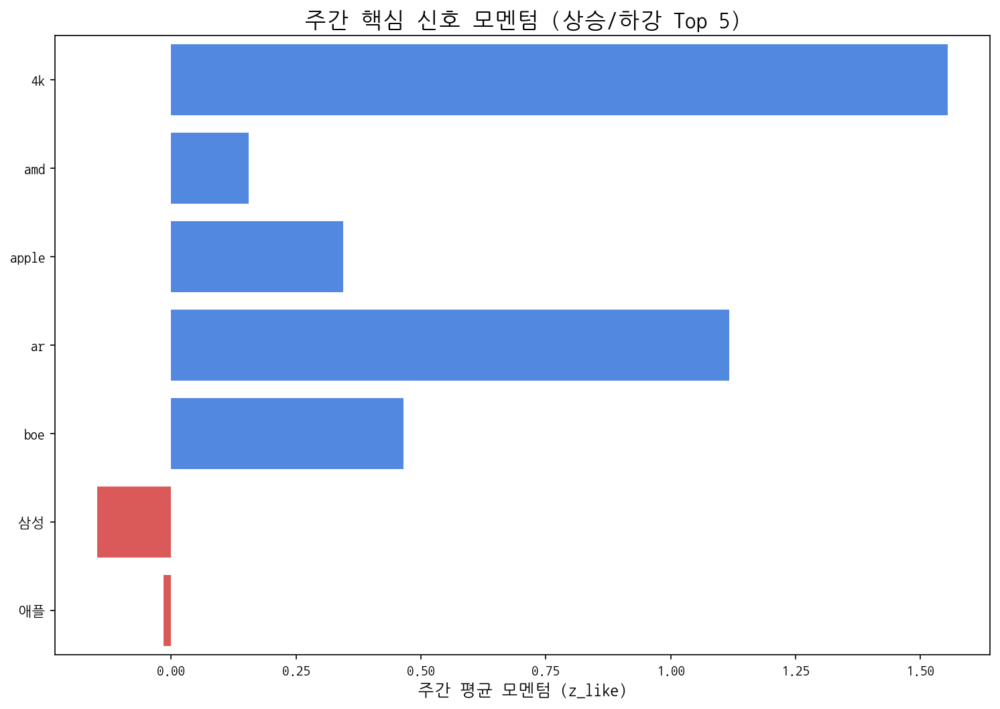

Weekly Intelligence (2025-10-18)
1. 주간 경영 요약 및 전략적 시사점
- 분석 기간: 2025-10-12 ~ 2025-10-18
- 총 분석 기사 수: 0
- 주요 이벤트 발생 건수: 233
핵심 맥락
- 이번 주 시장 데이터는 애플과 삼성의 디스플레이 패널 관련 활동, 그리고 중국 시장의 영향력에 집중되어 있습니다. 이는 프리미엄 디스플레이 시장의 경쟁 심화, 그리고 중국 패널 제조사들의 지속적인 성장세를 반영하는 것으로 해석됩니다.
전략적 인사이트
- 기회 요인: 애플과 삼성의 차세대 디스플레이 기술 경쟁은 우리에게 새로운 기술 협력 기회, 특히 성능과 가격 경쟁력을 갖춘 패널 기술 개발 및 공급 기회를 제공할 수 있습니다.
- 위협 요인: 중국 패널 제조사들의 공격적인 시장 확대는 우리 제품의 가격 경쟁력을 약화시키고, 시장 점유율을 잠식할 수 있습니다. 특히, 중저가 시장에서의 경쟁 심화가 예상됩니다.
추천 Action Items
- 실행 제안 1: 경쟁사(애플, 삼성)의 차세대 디스플레이 기술 로드맵 및 투자 계획을 심층 분석하여, 우리 기술의 경쟁력 확보 및 차별화 전략을 수립해야 합니다. 특히, 폴더블, 마이크로 LED 등 차세대 디스플레이 기술 개발에 대한 투자를 검토해야 합니다.
- 실행 제안 2: 중국 패널 제조사의 시장 전략 및 가격 정책을 면밀히 모니터링하고, 가격 경쟁력 확보를 위한 생산 효율성 개선 및 원가 절감 방안을 적극적으로 모색해야 합니다. 동시에, 프리미엄 시장에서의 기술 우위 확보를 위한 R&D 투자를 강화해야 합니다.
2. 주간 시장 테마 및 거시적 흐름 분석
| 키워드 |
주간 누적 점수 |
| 애플 |
0.893598 |
| 삼성 |
0.875531 |
| 패널 |
0.808794 |
| 중국 |
0.609302 |
| 디스플레이 |
0.550557 |
| 반도체 |
0.516043 |
| 한화 |
0.483151 |
| 미국 |
0.416679 |
| 폴더블 |
0.412027 |
| 생산 |
0.3156 |
3. 경쟁사 활동 강도 및 전략 전환 경보
금주에 감지된 주요 경쟁사 활동이 없습니다.
4. 잠재적 미래 성장 동력 및 초기 신호 발견
금주에 포착된 신규 약한 신호가 없습니다.
5. 핵심 트렌드 모멘텀 변화 및 우선순위 검토
| 핵심 신호 |
주간 총 언급량 |
일별 모멘텀(z_like) 추이 |
| lg디스플레이 |
4 |
1.2 |
| lg |
2 |
-0.4 |
| oled |
2 |
-0.4 |
| tcl |
1 |
0.6 |
| 비전프로 |
1 |
0.6 |
